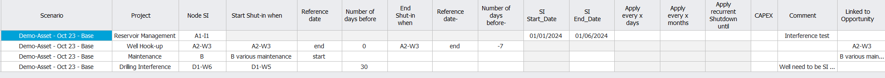
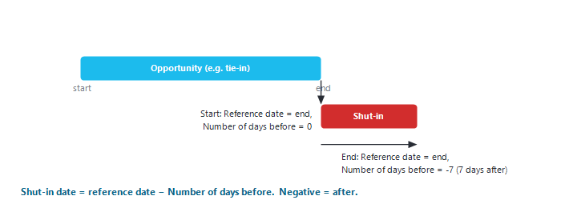
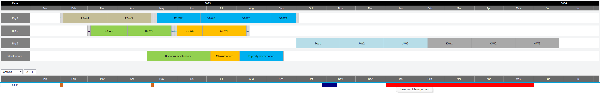
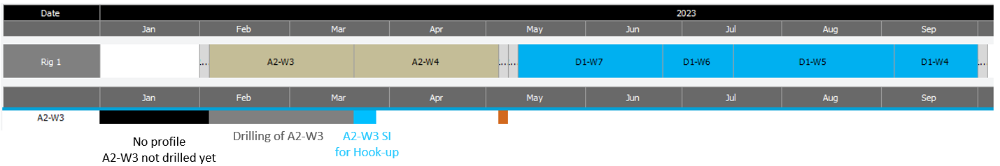
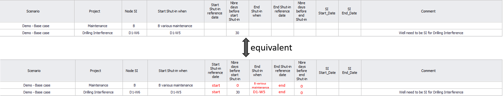
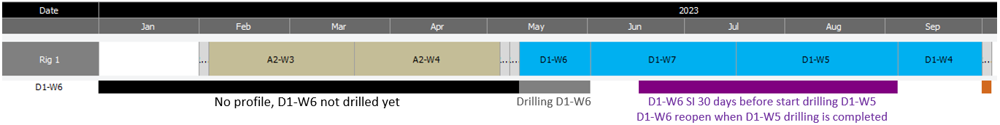
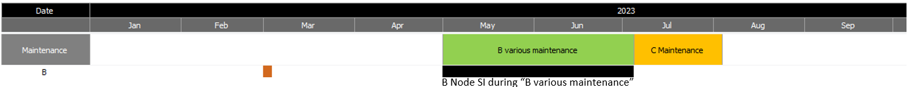

|
Shutdowns
1. Overview
The "Shutdowns" table closes a well, or any node of the production network, for a period of time. When a node is shut, every well that flows through it is shut too. Typical uses:
•reservoir management (for example an interference test between wells);
•well hook-up: keep new wells shut for a few days after the end of drilling;
•planned maintenance of a facility;
•drilling interference: shut a well while a nearby well is drilled.
Every shutdown belongs to a "Project". The project is used to calculate future losses (shortfalls) per project, and to switch a group of shutdowns on or off in "Settings" ("To be included in Forecast"), see Settings.
2. Open the table
1.Select the scenario on the main window.
2.Click "Shutdowns" in the "Expertise" group of the main ribbon.
The window title is "Shutdowns". Its ribbon has "Save", "Add" (adds a row), "Delete selected rows" (select full rows first), "Delete All rows" and "Help". Use "Filter by project:" and "Filter Node:" to show only some rows. Text typed in "Comment:" is saved with the change log when you click "Save".

Example of a shutdown table with four projects: Reservoir Management, Well Hook-up, Maintenance and Drilling Interference.
3. Columns
|
Column
|
Meaning
|
|
"Project"
|
The project the shutdown belongs to.
|
|
"Node SI"
|
The well or network node to shut. Select "All new Wells" to apply the row to every new well (for example a standard hook-up time); a well that has its own row for the same project keeps its own row.
|
|
"Shut-in Start Date" / "Shut-in End Date"
|
Fixed ("hard-coded") dates. When filled, they are used as they are.
|
|
"Start Shut-in when Opportunity"
|
Relative start: the opportunity whose date starts the shutdown.
|
|
"Reference date"
|
"start" or "end" of that opportunity (default "start").
|
|
"Number of days before"
|
Days before the reference date (default 0). Enter a negative number for days after it.
|
|
"End Shut-in when Opportunity", "Reference date ", "Number of days before "
|
Same three settings for the end of the shutdown. If the end opportunity is blank, the start opportunity is used; the default reference is "end".
|
|
"Well has potential during SD"
|
"Yes" or "No". Set "No" when the well has no potential during the shut-in. Rows of an "Abandoned" project are always "No".
|
|
"Apply every x days" / "Apply every x months"
|
Repeats the shutdown at this interval (recurrent shutdown).
|
|
"Apply recurrent Shutdown until"
|
Last date of the repetitions. Blank = until the end of the forecast.
|
|
"CAPEX", "OPEX", "OPEX unit", "Group cost to Node"
|
Costs linked to the shutdown, used by the Economical screener.
|
|
"Comment"
|
Free text. It can also be referenced by another row (see 4.4).
|
|
"Linked to Opportunity"
|
Filled by Precept when the shutdown was created from an opportunity.
|
4. Defining the dates
Use relative dates as much as possible. When a sequence of events (drilling schedule, stimulation campaign...) is shifted, shutdowns defined with relative dates follow automatically, and the table does not need to be updated.

How a relative shutdown is placed: the reference date (start or end of an opportunity) minus "Number of days before".
4.1 Fixed dates
In the example above, well "A1-I1" (project Reservoir Management) is shut with fixed dates from 01/01/2024 to 01/06/2024: the well is closed from 01/01/2024 00:00 to 31/05/2024 23:59. The timeline highlights the shut-in period in red.

4.2 Relative dates, example 1
Well "A2-W3" (project Well Hook-up): "Start Shut-in when Opportunity" = A2-W3, "Reference date" = end, "Number of days before" = 0; "End Shut-in when Opportunity" = A2-W3, "Reference date " = end, "Number of days before " = -7. The shut-in starts when the drilling of A2-W3 ends and ends 7 days later.

4.3 Relative dates, example 2: default values
To keep the table simple, cells can be left blank: they then take their default value (shown in red below). Both tables are equivalent.

This table generates the timeline below:


4.4 Using the date of another shutdown
Instead of an opportunity, "Start Shut-in when Opportunity" or "End Shut-in when Opportunity" can point to another shutdown row. Type an equals sign, the "Comment" of that row, a comma and the column to read, for example: = Compressor overhaul , SI End_Date (use SI Start_Date or SI End_Date).
4.5 Recurrent shutdowns
Fill "Apply every x days" or "Apply every x months" to repeat a shutdown (for example a monthly maintenance). The repetitions stop after "Apply recurrent Shutdown until"; if it is blank, they continue until the end of the forecast.
5. Checks made by Precept
When the forecast runs, Precept lists a warning if a shutdown refers to an opportunity that does not exist, or if the end of a shutdown is earlier than its start (for example because the end opportunity is scheduled before the start opportunity). Such a shutdown is not applied.
Shutdowns of a project set to "No" in "Settings" > "To be included in Forecast" are ignored. This is how what-if cases are made (for example the forecast without the maintenance plan).
|